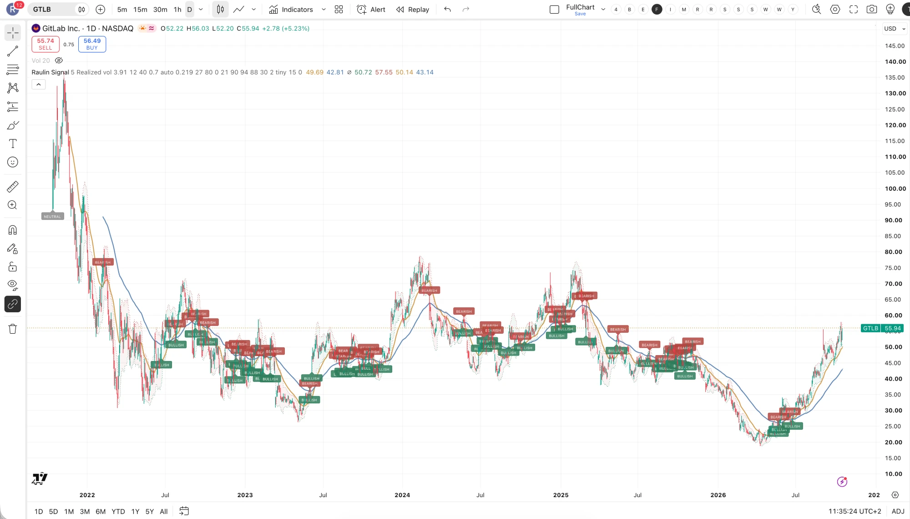
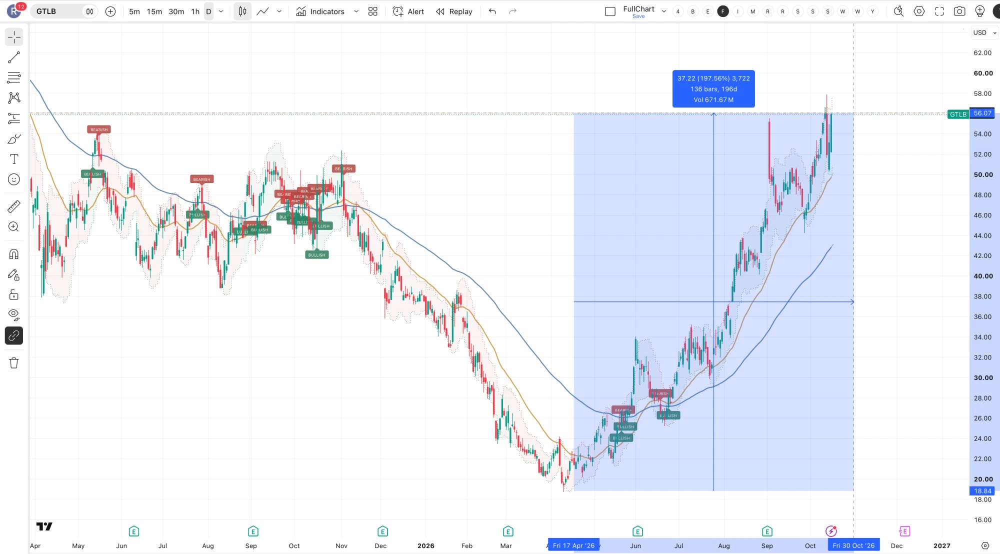

Microsoft
GitHub meldet, dass sich die KI-Projekte auf der Plattform binnen eines Jahres mehr als verdoppelt haben und die Firmenkunden um 75 % gestiegen sind. Mehr Agenten heißt mehr Code, heißt mehr Verwaltung.

Im Frühjahr hatten alle Angst, dass künstliche Intelligenz Software wertlos macht. Ich war anderer Meinung — und genau deshalb war der Kurs interessant. Hier steht die ganze Rechnung, mein Kursziel und das, was dagegen spricht.
Seit ChatGPT läuft an der Börse ein Reflex: Chips kaufen, Software verkaufen. Die Begründung klingt plausibel — wenn jeder mit künstlicher Intelligenz in einer Stunde eine App bauen kann, dann ist Software beliebig herstellbar und wird billig. Nur hing der Preis von Software noch nie an den Herstellungskosten. Er hängt am Nutzen. Und der steigt gerade.


GitLab ist die Werkstatt, in der Software entsteht. Entwickler verwalten dort ihren Code, planen Projekte, lassen Tests automatisch laufen, rollen neue Versionen aus und prüfen alles systematisch auf Sicherheitslücken. Das Besondere ist, dass all das in einer einzigen Anwendung liegt und nicht in acht verschiedenen Werkzeugen, die jemand zusammenstöpseln muss.
Verdient wird an Abonnements — wahlweise in der Cloud oder auf eigenen Servern des Kunden — und an Beratung und Schulung. Die Wurzeln liegen im offenen Quellcode: Ein erheblicher Teil des Produkts ist frei zugänglich. Das bringt eine aktive Gemeinschaft, schnelle Entwicklung und, wenn ein Unternehmen erst einmal drin ist, hohe Wechselkosten.
Künstliche Intelligenz schreibt nicht weniger Code, sondern sehr viel mehr — und jede Zeile davon muss getestet, abgesichert und verwaltet werden. Genau das verkauft GitLab. Was der Markt als Bedrohung einpreist, ist in Wahrheit Rückenwind.
Dazu kommt: Künstliche Intelligenz macht heute noch zu viele Fehler, als dass ein großes Unternehmen sich blind darauf verlassen könnte. Je mehr automatisch erzeugter Code entsteht, desto wichtiger wird die Instanz, die ihn prüft.
Eine Lizenz kostet rund 25 Dollar pro Nutzer und Monat. Das ist ein Bruchteil dessen, was ein Entwickler ein Unternehmen kostet — und deshalb ist die Preisempfindlichkeit niedrig, während die Zahlungsbereitschaft hoch ist.
Langfristig sind deshalb auch ganz andere Preismodelle denkbar: nicht mehr pro Nutzer, sondern nach Zahl und Aufgabe der eingesetzten Agenten — oder nach dem Wert, den sie liefern.
GitHub meldet, dass sich die KI-Projekte auf der Plattform binnen eines Jahres mehr als verdoppelt haben und die Firmenkunden um 75 % gestiegen sind. Mehr Agenten heißt mehr Code, heißt mehr Verwaltung.
In den Umfragen von JP Morgan und Bernstein steht Anwendungssoftware auf Platz zwei der Ausgabenpläne. Die Mehrheit kauft künstliche Intelligenz lieber vom etablierten Anbieter, als sie selbst zu bauen.
Die These „Künstliche Intelligenz ersetzt Entwickler" müsste sich in sinkenden Stellenanzeigen zeigen. Das Gegenteil passiert: Ausschreibungen und Einstellungen haben sich stabilisiert und drehen nach oben.
GitLab Duo ist beim Start misslungen, das Management hat nachgebessert. Die Nutzerzahl hat sich seit Jahresanfang versechsfacht — von niedriger Basis, aber in jeder Kundengruppe wachsend.
| Kennzahl | Wert | Was das heißt |
|---|---|---|
| Wachstum zuletzt | +29 % | im Jahresvergleich, rund 70 % davon aus neu gewonnenen Kunden |
| Große Kunden | +25 % | Kunden mit über 100.000 $ Jahresumsatz |
| Bewertung | 7 × Umsatz | Software mit 20–40 % Wachstum liegt bei rund 9 × |
| Freier Mittelzufluss | rund 20 % | das Unternehmen ist profitabel, nicht nur schnell |
| Operative Marge | +700 Basispunkte | Verbesserung im Jahresvergleich |
| Vertrieb und Verwaltung | rund 70 % | Branchenschnitt — hier liegt weiteres Sparpotenzial |
Der Markt verändert sich schnell. GitHub gehört zu Microsoft, und die Vibe-Coding-Plattformen wachsen rasant.
Der Großteil des Umsatzes hängt noch an der Zahl der Sitze. Wenn weniger neue Kunden dazukommen, muss der Umsatz je Kunde wachsen.
Software-Anleger schauen fast nur auf Umsatzwachstum. Eine Delle dort trifft den Kurs härter als eine Delle beim Gewinn.
Beim Boom der neuen Coding-Startups war GitLab nicht vorne dabei — auch wegen des misslungenen Starts von Duo.
Mein Kursziel sind 75 Dollar. Das Chancen-Risiko-Verhältnis sehe ich bei etwa 3 zu 1, das Risiko stufe ich als moderat ein — anders als bei Wolfspeed ist das hier keine spekulative Wette, sondern ein profitables Unternehmen mit über 25 Prozent Wachstum zu einer Bewertung unter dem Branchenschnitt.
Nach fast 200 Prozent seit April habe ich einen Teil realisiert. Das ist kein Misstrauen gegenüber der These, sondern schlicht die Folge daraus, dass eine Position nach so einem Lauf größer ist, als ich sie geplant hatte.
Was ich beobachte: ob das Wachstum tatsächlich auf 20 Prozent absinkt, wie das Management andeutet, und ob der Markt anfängt, Software wieder höher zu bewerten. Beides würde das Kursziel verschieben — in die eine oder die andere Richtung.